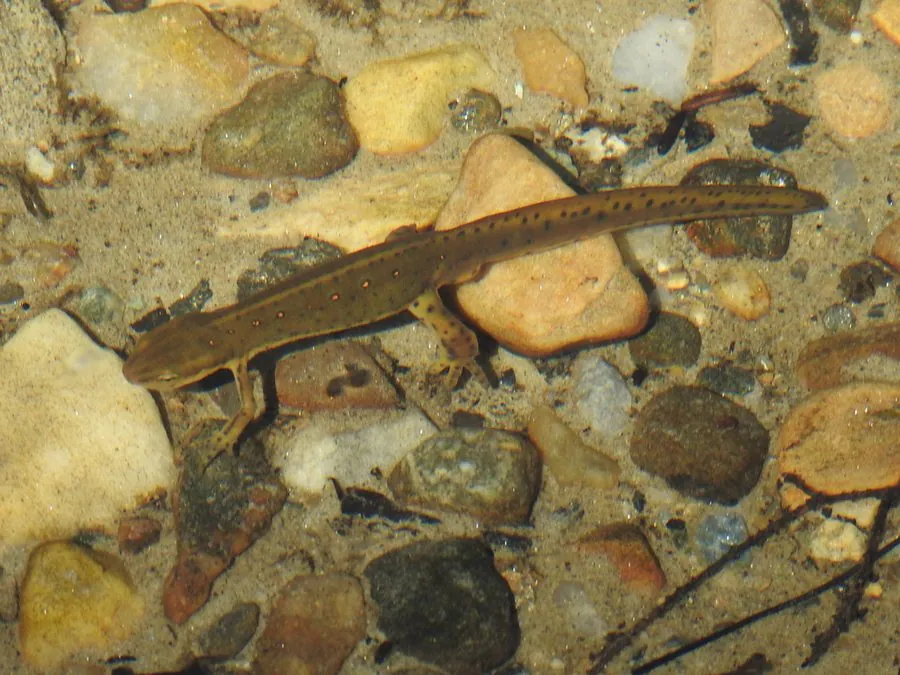

两栖动物 · 动物界
绿红东美螈 Notophthalmus viridescens

北美洲东部的蝾螈，经历水生幼体、红色陆生成体和橄榄绿水生繁殖体三个阶段，皮肤含河豚毒素。
- 分类
- 门脊索动物门纲两栖纲目有尾目科蝾螈科属东美螈属
- 栖息环境
- 北美东部的森林、池塘、沼泽和潮湿林地
- 地理分布
- 北美洲东部和中部
- 保护级别
- IUCN 无危（LC）；非中国原产，在中国无保护级别
物种志
绿红东美螈体长 7–12 厘米。幼体在水中生活，有外鳃；离开水后进入鲜橙红色的陆生阶段，俗称红螈，皮肤干燥、带红色斑点；再次回到水中繁殖时，体色转为橄榄绿或黄绿色，腹部黄色并散布红色小点，尾部生出侧扁的鳍。
它广泛分布于北美洲东部的森林、池塘和沼泽，生活史十分特殊：水生幼体变态为陆生红螈，在陆地生活 2–7 年后又回到水中成为水生成体。红螈阶段体色鲜艳，是警戒色，皮肤含有河豚毒素，能毒杀吞食它的捕食者。成虫捕食昆虫、蠕虫、甲壳类和小鱼，春季在水塘中产卵。绿红东美螈是北美常见的蝾螈，也是研究生活史演化的经典物种。
形态与习性
- 食性昆虫、蠕虫、甲壳类和小鱼
- 体长约 7–12 cm
- 生活史水生幼体、陆生红螈、水生成体三个阶段
- 毒性皮肤含河豚毒素，可毒杀捕食者
- 繁殖春季在水塘中产卵，幼体有外鳃
- 寿命约 12–15 年
趣味知识
- 绿红东美螈一生要经历水生、陆生、再水生的三次转变。
- 陆生阶段的红螈通体橙红，用鲜艳颜色警告天敌自己有毒。
- 它的皮肤含有河豚毒素，是少数具有强毒的两栖动物之一。